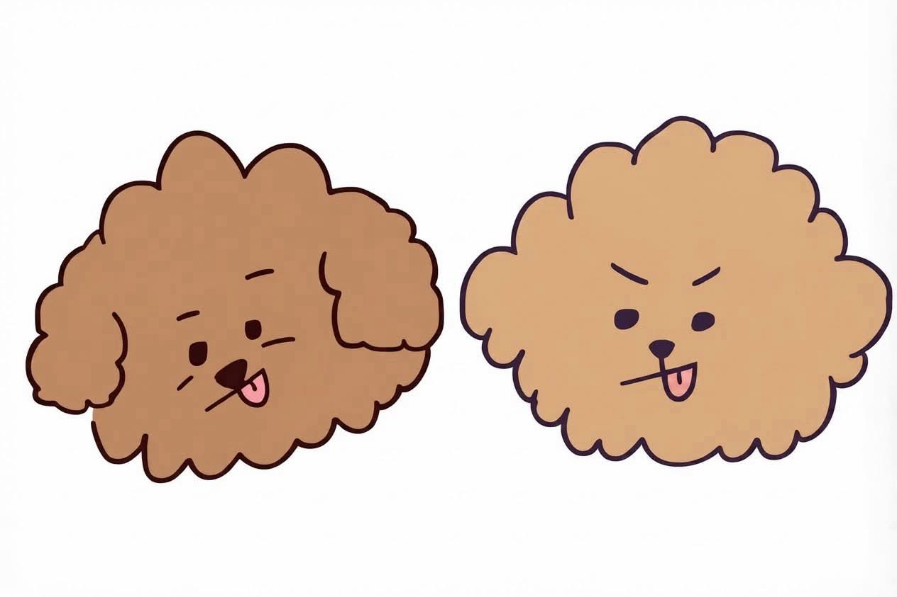

02 / A LITTLE STORY ABOUT US
叩叩叩！
歡迎來到我們的手作基地。
哈囉大家好～我是 Cookie くま的小裁縫 👋🏻
準備了好久，終於有自己的裁縫小基地了！
為什麼叫 Cookie くま呢？因為我的小狗狗 Cookie 毛茸茸的很像小熊，也常常給我溫暖。於是，我想把這份溫暖製作成日常手作小物，傳遞給大家。
這裡會不定時分享我的裁縫日常，也會有新作品跟大家見面呦 💛
你平時最喜歡什麼風格或用途的小物呢？化妝包、零錢包、寵物小領巾、杯墊……都可以來 IG 留言告訴我呦！